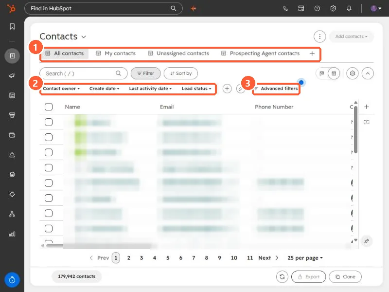
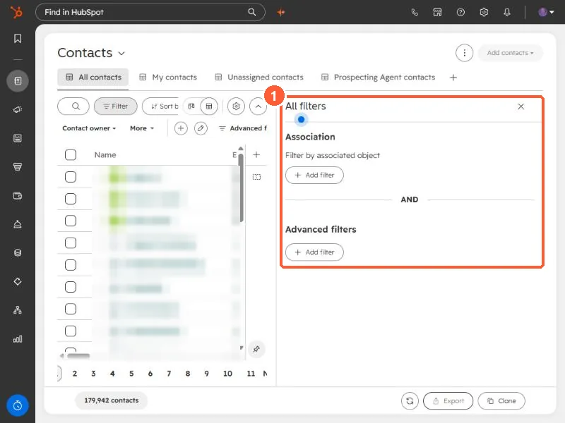
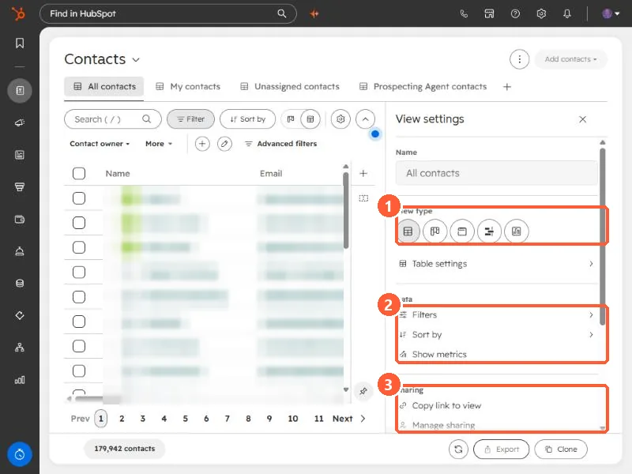

Short answer
On an index page such as Contacts, views sit as tabs along the top. Narrow a view with the quick filters (Contact owner, Create date, Last activity date, Lead status) or Advanced filters, which add association filters and property filters. The gear opens View settings, where you pick a view type (table, board, calendar, Gantt, or report in my demo), set filters and sort, and use Manage sharing. HubSpot's sharing options are Private, Team, Everyone, and Custom. Up to 5 view tabs stay pinned.
1. View tabs and quick filters
Open Contacts. Record names and emails are blurred below.


- The tabs here are All contacts, My contacts, Unassigned contacts, and one more. The plus adds another.
- HubSpot says up to 5 tabs stay pinned once opened. Opening a 6th closes one automatically.
- The quick filters are one click each. HubSpot lets you customize which quick filters appear.
2. Advanced filters
Click Advanced filters. The All filters panel has two parts joined by AND: Association, which filters by an associated object, and Advanced filters, for property and other criteria.


3. View settings
Click the gear icon above the table. The panel holds the view's name, type, data settings, and sharing.


- View type. In my demo the options are Table, Board, Calendar, Gantt, and Report view.
- Data. Filters, Sort by, and Show metrics.
- Sharing. Copy link to view, and Manage sharing.
Further down the same panel are Export, Save changes, Reset to last save, Clone to new view, and Delete view. The panel shows keyboard shortcuts for Save changes (Ctrl+S) and Export (Ctrl+Shift+X).
4. Share it
HubSpot's sharing options are Private (only you), Team, Everyone, and Custom (chosen teams or users). A shared view is a good replacement for a list that only exists to be looked at. For lists that need to drive email or workflows, see active vs static segments.